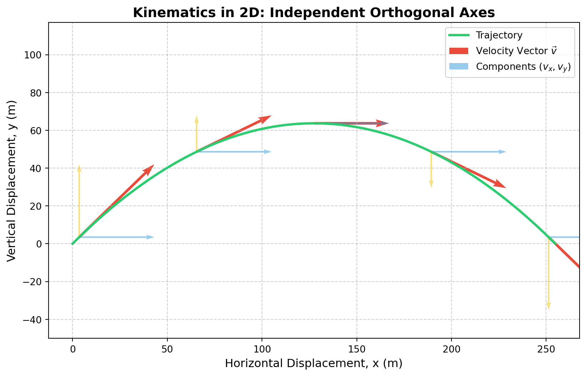

Deriving the equations of motion, average velocity, \(n\)-th second displacements, and advanced generalizations.
Physics
Mathematics
Mechanics
Published
September 7, 2026
Kinematics Blueprint
Kinematics is the branch of classical mechanics that describes the motion of points, bodies, and systems of bodies without considering the forces that cause them to move (which falls under dynamics).
In this article, we’ll rigorously break down the core equations of motion for constant acceleration, focusing deeply on some of the less-intuitive rearrangements (such as predicting displacement purely from final velocity) and deriving the exact displacement traversed during the \(n\)-th second of motion. Finally, we’ll look at calculus-based generalizations for non-uniform motion.
1. The Core Equations of Constant Acceleration
For a particle undergoing rectilinear (straight-line) motion with a constant acceleration \(a\), we define the following variables: * \(u\) = initial velocity at time \(t = 0\) * \(v\) = final velocity at time \(t\) * \(s\) = displacement from the initial position * \(t\) = time elapsed
The three most famous kinematic equations are derived directly from the definitions of acceleration \(a = \frac{dv}{dt}\) and velocity \(v = \frac{ds}{dt}\):
Velocity-Time:\(v = u + at\)
Displacement-Time:\(s = ut + \frac{1}{2}at^2\) (or in coordinate form: \(x_f = x_i + ut + \frac{1}{2}at^2\))
Velocity-Displacement:\(v^2 = u^2 + 2as\)
However, physics often requires us to solve problems where certain variables are unknown, leading to highly useful alternative formulations.
Deriving Equation (d): The Average Velocity Formulation
Formula:\(s = \frac{u + v}{2} \cdot t\)
When an object accelerates constantly, its velocity increases linearly. Because a linear relationship forms a straight line on a velocity-time graph, the average velocity over the time interval \(t\) is simply the arithmetic mean of the initial and final velocities: \[v_{\text{avg}} = \frac{u + v}{2}\]
Since displacement is the product of average velocity and time (\(s = v_{\text{avg}} t\)), we immediately arrive at \(s = \frac{u+v}{2}t\).
Why it’s useful: This formula allows you to find displacement without needing to know or calculate the acceleration \(a\).
Deriving Equation (e): Displacement in the \(n\)-th Second
Formula:\(s_n = u + \frac{a}{2}(2n - 1)\)
A common physics trick question asks not for the total distance traveled after \(n\) seconds, but the specific distance traveled only during the\(n\)-th second (e.g., the distance covered between \(t = 4\)s and \(t = 5\)s).
To find this, we take the total displacement at \(t = n\) and subtract the total displacement at \(t = n-1\).
Let \(S(t) = ut + \frac{1}{2}at^2\). \[s_n = S(n) - S(n-1)\]\[s_n = \left( un + \frac{1}{2}an^2 \right) - \left( u(n-1) + \frac{1}{2}a(n-1)^2 \right)\]\[s_n = un + \frac{1}{2}an^2 - \left( un - u + \frac{1}{2}a(n^2 - 2n + 1) \right)\]\[s_n = u + \frac{1}{2}an^2 - \frac{1}{2}an^2 + an - \frac{1}{2}a\]\[s_n = u + a\left(n - \frac{1}{2}\right)\]\[s_n = u + \frac{a}{2}(2n - 1)\]
2. The “Backwards” Displacement Formula
Usually, we predict displacement looking forward from the initial conditions using \(s = ut + \frac{1}{2}at^2\). But what if we don’t know the initial velocity \(u\), and only know the final velocity \(v\)?
We can manipulate \(v = u + at\) to isolate \(u = v - at\). Substituting this into the standard displacement equation: \[s = (v - at)t + \frac{1}{2}at^2\]\[s = vt - at^2 + \frac{1}{2}at^2\]\[s = vt - \frac{1}{2}at^2\]
This formulation is symmetrically beautiful. Just as \(ut + \frac{1}{2}at^2\) builds displacement forward from \(u\), \(vt - \frac{1}{2}at^2\) subtracts the acceleration curve backward from \(v\).
3. Freely Falling Bodies (\(u=0\))
When dealing with gravity, convention dictates that we establish a coordinate system. Let’s take the upward direction as positive. Therefore, gravity acts downwards, so \(a = -g\) (where \(g \approx 9.81 \text{ m/s}^2\)).
If an object is dropped from rest, its initial velocity \(u = 0\). Plugging \(u = 0\) and \(a = -g\) into our standard equations yields:
Velocity:\(v = -gt\) (Velocity becomes increasingly negative as it falls downward).
Displacement:\(s = -\frac{1}{2}gt^2\).
If we track absolute height \(h\) rather than relative displacement \(s\), we substitute \(s = h_f - h_i\), yielding \(h_f = h_i - \frac{1}{2}gt^2\).
Velocity-Displacement:\(v^2 = -2gs\).
\(n\)-th second fall:\(s_n = -\frac{g}{2}(2n - 1)\).
The Counter-Intuitive Freefall Rearrangement
What happens if we apply our “backwards” displacement formula (\(s = vt - \frac{1}{2}at^2\)) to a freely falling body?
At first glance, seeing a $+$ sign alongside gravity is jarring when upward is positive. However, it makes perfect mathematical sense. Because the final velocity \(v\) of a falling object is a large negative number, \(vt\) produces a massive negative displacement. The \(+\frac{1}{2}gt^2\) term acts as a positive correction factor pulling that massive negative number back up to the true, smaller negative displacement \(s\).
4. Advanced Generalizations
Constant acceleration is a special case. In the real world, forces fluctuate, meaning acceleration fluctuates. To model this, we must generalize kinematics using calculus.
Calculus-Based Kinematics
If acceleration \(a(t)\) is a time-dependent function, we cannot use the algebraic equations above. Instead, we must integrate:
A particularly useful mathematical trick in calculus-based rectilinear motion is eliminating time using the chain rule. If acceleration is given as a function of position \(a(x)\) rather than time, we can write: \[a = \frac{dv}{dt} = \frac{dv}{dx} \cdot \frac{dx}{dt} = v \frac{dv}{dx}\]\[\int a(x) \, dx = \int v \, dv\] This is the generalized, non-constant acceleration equivalent of \(v^2 = u^2 + 2as\), and is the foundation for deriving the Work-Energy Theorem (\(W = \Delta K\)).
2D Projectile Motion
Kinematics scales to multiple dimensions using vector spaces. Because orthogonal vectors are mathematically independent, projectile motion can be split into two decoupled 1D problems: * X-Axis (Horizontal): Constant velocity (\(a_x = 0\)), so \(x(t) = v_{0x} t\). * Y-Axis (Vertical): Constant acceleration (\(a_y = -g\)), utilizing our freefall equations.
Let’s visualize the decoupled nature of projectile motion programmatically.
Code
import numpy as npimport matplotlib.pyplot as plt# Initial conditionsv0 =50.0# initial velocity m/stheta = np.radians(45) # launch angleg =9.81v0_x = v0 * np.cos(theta)v0_y = v0 * np.sin(theta)# Time of flightt_flight =2* v0_y / gt = np.linspace(0, t_flight, 100)# Equations of motion (Vector components)x = v0_x * ty = v0_y * t -0.5* g * t**2# Plottingplt.figure(figsize=(10, 6))plt.plot(x, y, label='Projectile Trajectory', color='#2ecc71', linewidth=2.5)# Plot velocity vectors at intervalst_intervals = np.linspace(0.1, t_flight -0.1, 5)for ti in t_intervals: xi = v0_x * ti yi = v0_y * ti -0.5* g * ti**2 vx = v0_x vy = v0_y - g * ti# Velocity vector plt.quiver(xi, yi, vx, vy, color='#e74c3c', scale=250, width=0.005)# Components plt.quiver(xi, yi, vx, 0, color='#3498db', scale=250, width=0.003, alpha=0.5) plt.quiver(xi, yi, 0, vy, color='#f1c40f', scale=250, width=0.003, alpha=0.5)plt.title("Kinematics in 2D: Independent Orthogonal Axes", fontsize=14, fontweight='bold')plt.xlabel("Horizontal Displacement, x (m)", fontsize=12)plt.ylabel("Vertical Displacement, y (m)", fontsize=12)plt.grid(True, linestyle='--', alpha=0.6)plt.legend(["Trajectory", "Velocity Vector $\\vec{v}$", "Components ($v_x, v_y$)"], loc='upper right')plt.axis('equal')plt.ylim(bottom=0)plt.show()
Ignoring fixed y limits to fulfill fixed data aspect with adjustable data limits.

Figure 1: Kinematics of Projectile Motion: Decoupling horizontal constant velocity from vertical constant acceleration.
By mastering these derivations, you move beyond rote memorization of formulas into a deep structural understanding of physical motion.